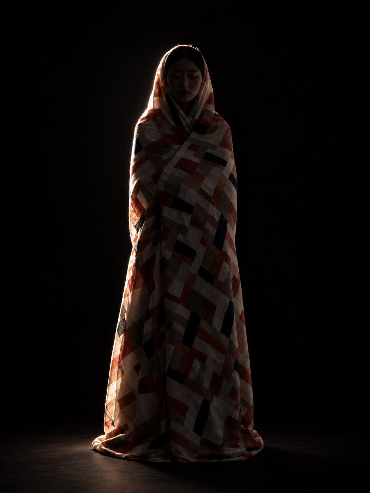
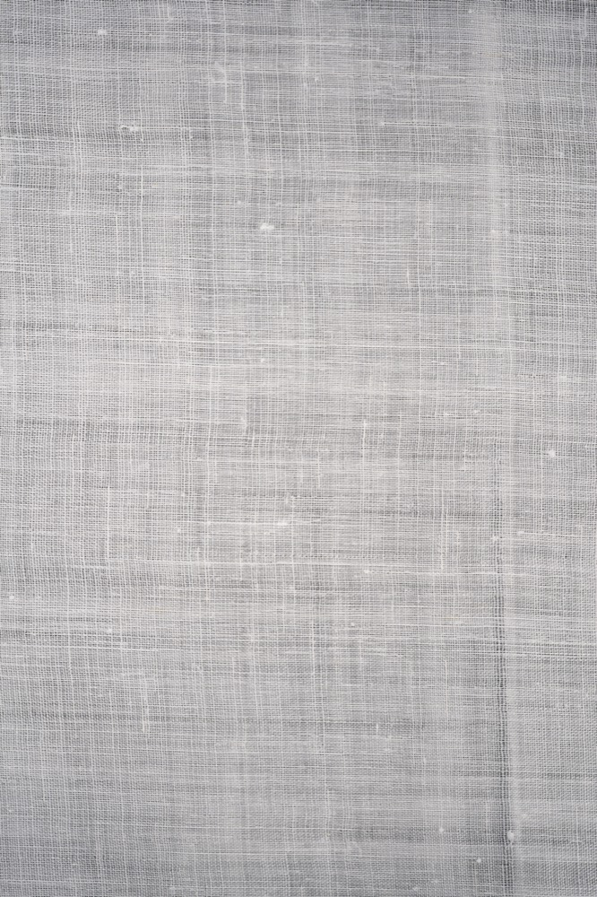
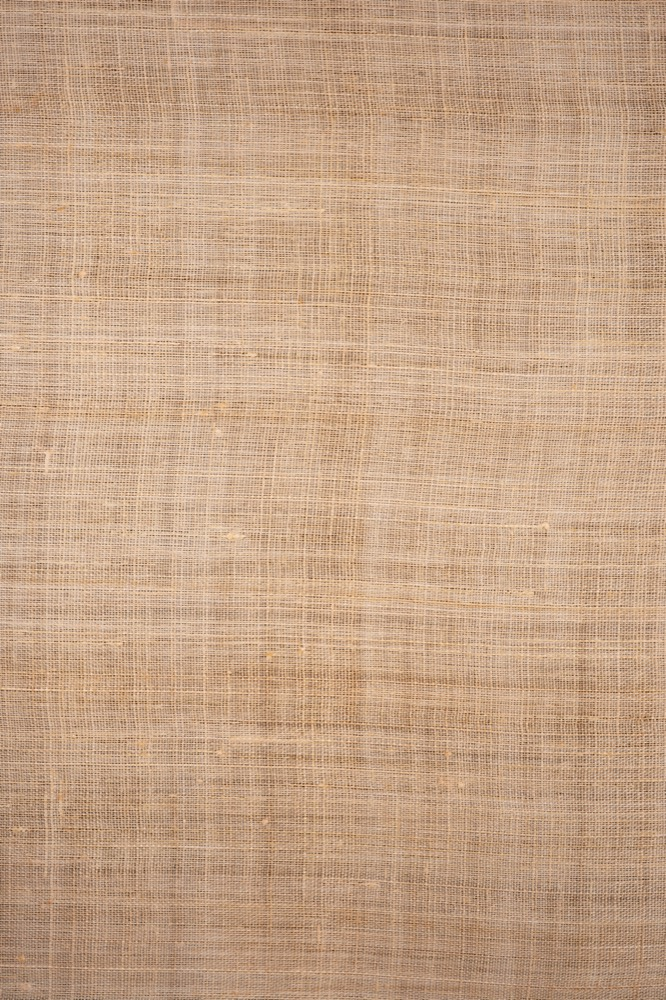
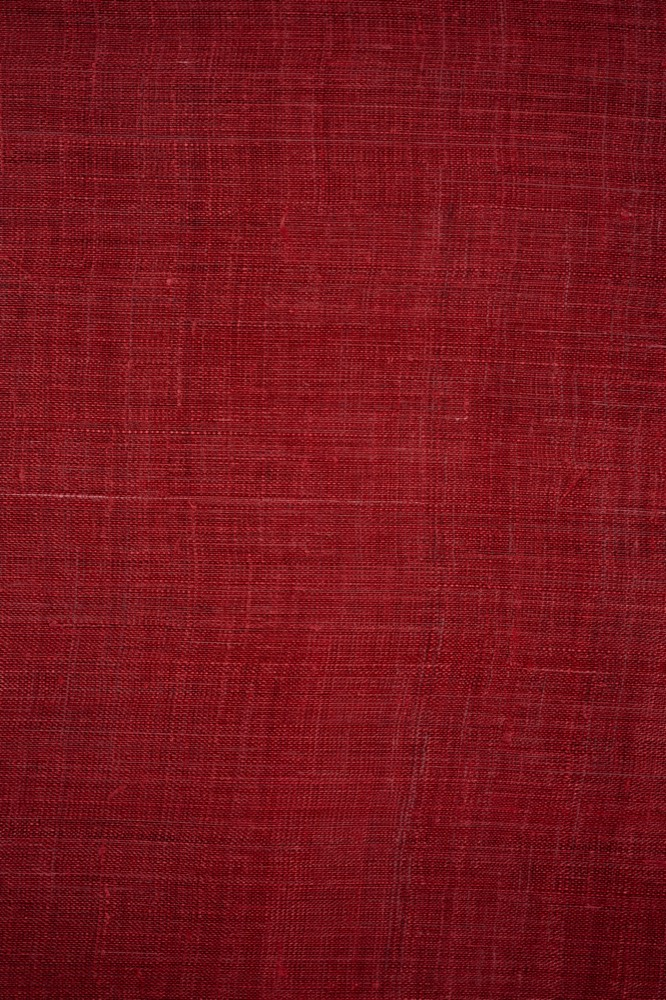
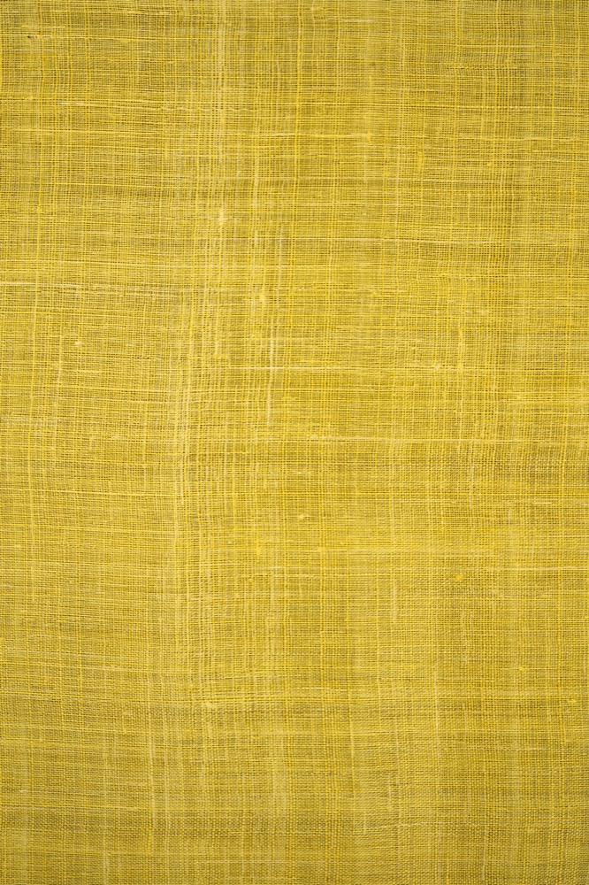
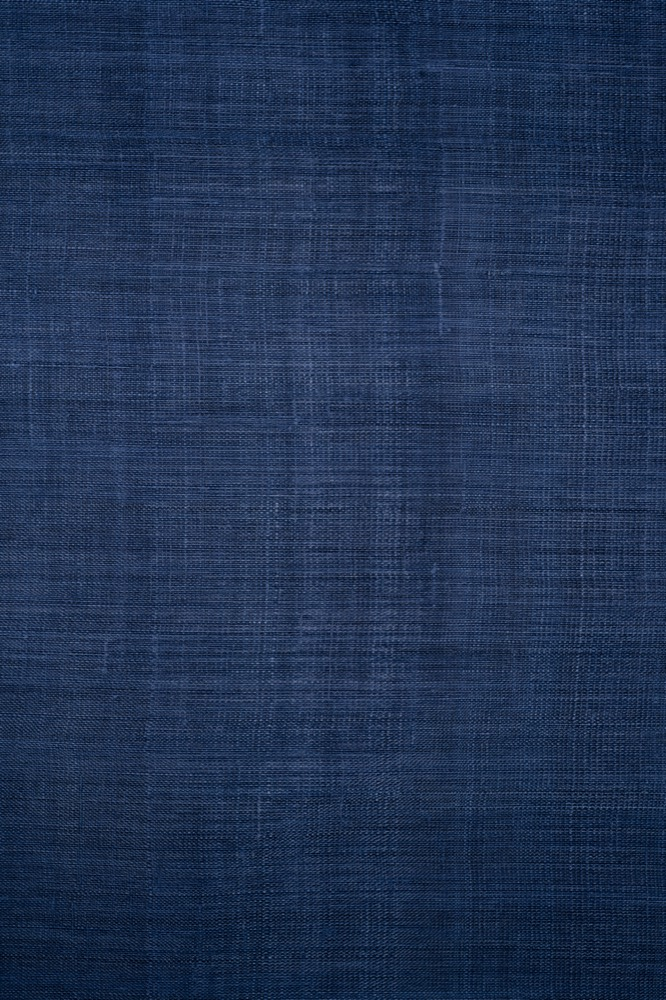
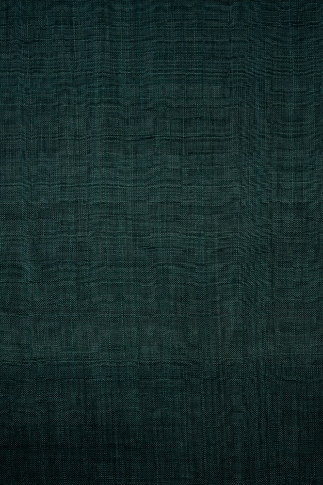
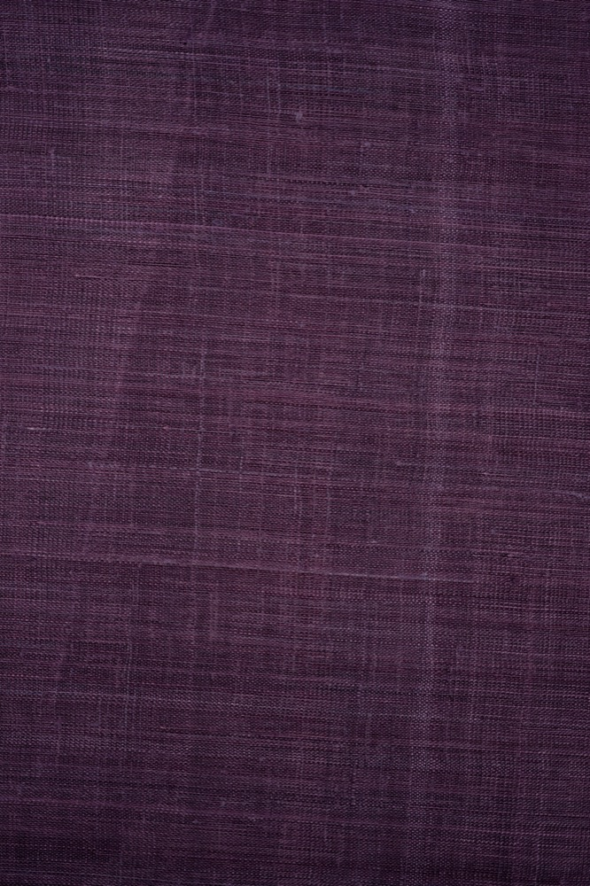
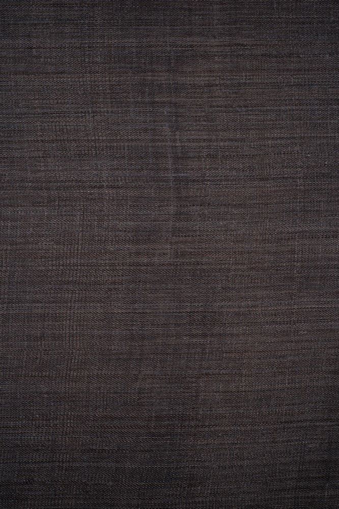
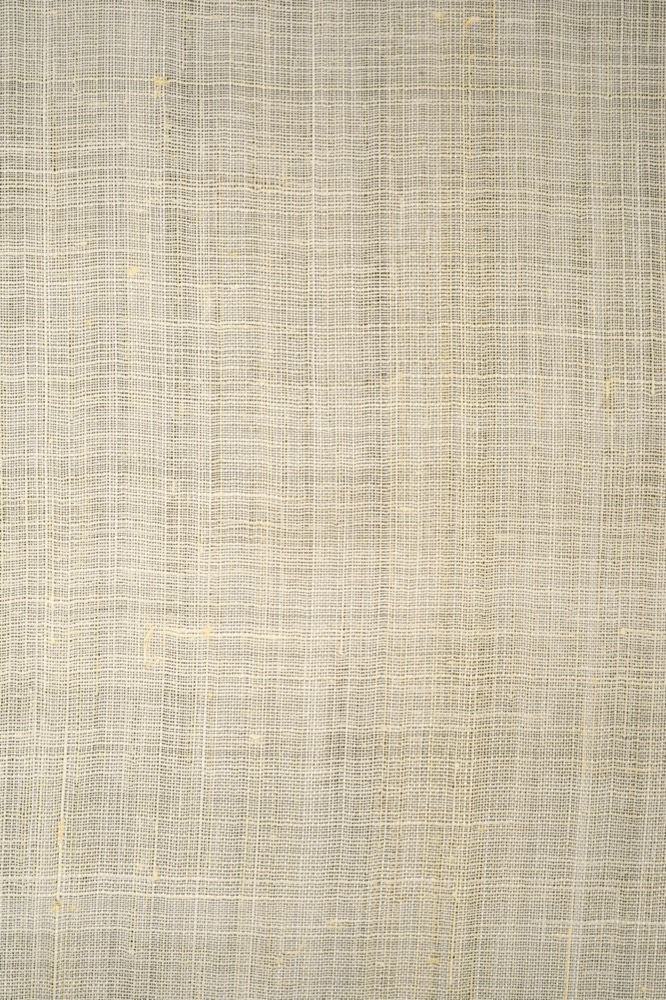

2026 정기전
조각보
가장 귀한 것을 감싸다
01
감싸다
가장 귀한 것은 먼저 감싸 둔다.
02
머금다
조각보 아래 고개를 숙인 채,
아직 보이지 않는 것.
03
마주하다
가리개를 걷고 정면을 본다.
04
드러나다
감싸였던 것이 비로소 모습을 드러낸다.

2026 정기전
가장 귀한 것을 감싸다
01
가장 귀한 것은 먼저 감싸 둔다.
02
조각보 아래 고개를 숙인 채,
아직 보이지 않는 것.
03
가리개를 걷고 정면을 본다.
04
감싸였던 것이 비로소 모습을 드러낸다.
작품 설명
조각보는 쓰고 남은 천 조각을 한 땀씩 이어 만든 보자기입니다. 버려질 뻔한 조각들이 모여, 가장 귀한 것을 감싸는 한 장의 천이 됩니다.
이 작업은 그 감싸는 행위를 네 장면으로 풀어냅니다. 완전히 감싸인 몸에서 시작해, 가리개를 거두고, 마침내 드러나기까지. 화면을 내릴수록 조각들이 모여 한 장의 사진이 되는 것처럼, 전시장에 걸린 사진과 이 웹 페이지는 같은 조각보의 원리를 서로 다른 크기로 보여줍니다.
원단
성기게 짠 올 사이로 빛이 비치는 모시. 작품에 쓰인 아홉 가지 색입니다.

회색
베이지
적색
황색
남색
녹색
자주
먹색
생지